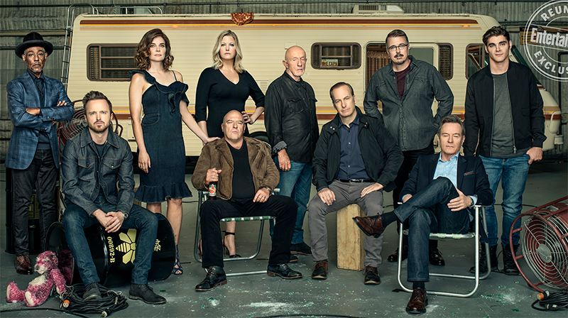

Elenco e Personagens
Personagens Principais
Walter White - Bryan Cranston
Descrição: Walter White também conhecido por seu pseudônimo clandestino e apelido comercial Heisenberg, é um químico e chefão do tráfico aposentado de Albuquerque, Novo México. Walt é um ex-professor de química do ensino médio que, após ser diagnosticado com câncer de pulmão terminal, começou a fabricar metanfetamina de cristal quimicamente puro com seu ex-aluno, Jesse Pinkman. Seu plano inicial era ganhar dinheiro suficiente para sustentar sua família após sua morte, mas depois foi quase completamente consumido por seu império de drogas.
Jesse Pinkman - Aaron Paul
Descrição: Jesse Pinkman é um antigo aluno de ensino médio de Walt, e mais tarde, torna-se parceiro de Walter White no tráfico de metanfetamina. Na escola, Jesse era um pequeno consumidor e traficante de drogas. Ele era um estudante que dava pouca atenção às aulas de química de Walter. Anos mais tarde, Jesse está envolvido no pesado esquema de tráfico de drogas. Como Walt, Jesse fica perturbado com a violência nos altos níveis de tráfico de drogas, mas ele faz o que acha necessário. Ele muitas vezes sofre sentimentos de culpa devido à morte de pessoas com quem ele se associa, todas relacionadas ao negócio. Ocasionalmente ele vai às reuniões de Narcóticos Anônimos para ajudá-lo com esses sentimentos.
Skyler White - Anna Gunn
Descrição: Skyler White é a esposa de Walter White e irmã de Marie Schrader. Ela e Walter têm um filho adolescente, Walter White Jr., e uma filha pequena, Holly White. Skyler se preocupa muito com Walter, mas o casamento deles se torna cada vez mais tenso devido às suas ausências inexplicáveis e comportamento bizarro, levando à separação.
Walter White Junior - RJ Mitte
Descrição: Walter White Júnior é o filho mais velho de Walter e Skyler, ele teve paralisia cerebral. Ele fica revoltado após o anúncio do câncer de Walter. Ele frequenta a JP Wynne High School, onde seu pai costumava trabalhar como professor de química no ensino médio.
Henry R. "Hank" Schrader - Dean Norris
Descrição: Hank Schrader é cunhado de Walter White e marido de Marie Schrader . Ele é um agente do escritório de Albuquerque da Drug Enforcement Administration , que lidera a investigação do cozinheiro de metanfetamina "Heisenberg", e também investigou o império das drogas de Gustavo Fring . Ele enfrenta inúmeras ameaças dos cartéis de drogas rivais que afetam a saúde mental de Hank.
Marie Schrader - Betsy Brandt
Descrição: Marie Schrader é irmã de Skyler White , esposa do agente da DEA Hank Schrader e cunhada de Walter White . Marie é próxima de sua irmã, embora sua tendência a bisbilhotar invariavelmente irrite Skyler. Marie trabalha como tecnóloga radiológica no Kleinman Radiology Center, um escritório de exames médicos e raios-X.
Mike Ehrmantraut - Jonathan Banks
Descrição: Mike Ehrmantraut é um veterano do Corpo de Fuzileiros Navais, ex-policial da Filadélfia e criminoso de carreira aposentado, que trabalhou para Gustavo Fring e Saul Goodman como investigador particular, chefe de segurança, limpador, fixador e assassino. Ele também era o braço direito de Gus em seu império das drogas , e também era um parceiro temporário e relutante no império das drogas de Walter White.
Saul Goodman - Bob Odenkirk
Descrição: James Morgan "Jimmy" McGill , mais conhecido por seu pseudônimo profissional Saul Goodman , é um advogado de Albuquerque e advogado de defesa criminal. Ele é o irmão mais novo de Chuck McGill e marido de Kim Wexler . Jimmy operava em um escritório barato de shopping center em Albuquerque, Novo México, antes de estabelecer sua própria empresa na Saul Goodman & Associates.
Gustavo "Gus" Fring - Giancarlo Esposito
Descrição: Gustavo "Gus" Fring, também conhecido como Chicken Man, é um distribuidor de narcóticos chileno-americano, chefão das drogas, empresário, filantropo e dono de restaurante. Ele usa vários negócios legítimos, incluindo Los Pollos Hermanos e Lavandería Brillante, como fachadas para sua vasta operação de drogas.
Todd Alquist - Jesse Plemons
Descrição: Todd é um cozinheiro de metanfetaminas e ex-exterminador de Vamonos Pest, e sobrinho de Jack Welker. Ele trabalhou para Walter White, Mike Ehrmantraut e Jesse Pinkman em seus negócios de fabricação de metanfetamina. Todd também operou para a gangue de seu tio Jack Welker e sua aliada Lydia Rodarte-Quayle, por quem Todd tem uma queda.
Lydia Rodarte-Quayle - Laura Fraser
Descrição: Lydia é executiva de negócios e chefe de Logística da Madrigal Electromotive GmbH, e está sediada em seu escritório em Houston, Texas. Ela secretamente forneceu metilamina a Gustavo Fring antes do colapso do Império das Drogas de Gus, e mais tarde se alinhou com o Império das Drogas de Walter White e, eventualmente, com a Gangue de Jack Welker.
Personagens Secundários
- Steven Michael Quezada como Steven "Gomie" Gomez: Parceiro de Hank no DEA e melhor amigo que ajuda a rastrear e identificar Heisenberg.
- Matt L. Jones como Brandon "Badger" Mayhew: Amigo pouco inteligente de Jesse e viciado.
- Charles Baker como Skinny Pete: Um amigo de Jesse e um companheiro traficante.
- Rodney Rush como Christian "Combo" Ortega: Também um amigo de Jesse e um companheiro traficante.
- Jessica Hecht e Adam Godley como Gretchen e Elliot Schwartz: Os co-proprietários da Gray Matter, uma empresa que co-fundaram ao lado de Walter, que deixou a empresa antes de seu grande sucesso. Gretchen era uma antiga paixão de Walt e aparentemente a razão pela qual ele saiu.
- Raymond Cruz como Tuco Salamanca: Um traficante mexicano sociopata que se torna distribuidor de metanfetamina de Walt e Jesse.
- Mark Margolis como Hector Salamanca: Um ex-membro do alto escalão do Cartel de Juarez, que é agora incapaz de andar ou falar por causa de um acidente vascular cerebral, se comunica com a ajuda de um sino. Ele é o tio de Tuco, Marco e Leonel Salamanca.
- Christopher Cousins como Ted Beneke: Chefe de Skyler e presidente da Beneke Fabricators que começa a ter problemas financeiros, resultando em uma intervenção da Skyler.
- Krysten Ritter como Jane Margolis: Senhorio e namorada de Jesse, que é uma condenada em recuperação.
- John de Lancie como Donald Margolis: Pai de Jane Margolis, um controlador de tráfego aéreo.
- David Costabile como Gale Boetticher: Um químico contratado por Gus Fring para trabalhar ao lado de Walter.
- Daniel Moncada e Luis Moncada como Leonel e Marco Salamanca: Dois pistoleiros cruéis do Cartel de Juarez, que são os primos de Tuco Salamanca e os sobrinhos de Hector Salamanca.
- Emily Rios como Andrea Cantillo: Segunda namorada de Jesse, que também é uma viciada em recuperação. Ela tem um filho chamado Brock.
- Jeremiah Bitsui como Victor: Um capanga leal a Gus que serve como seu capanga, juntamente com Mike.
- Lavell Crawford como Huell: Guarda-costas de Saul, que também lida com problemas de Walter.
- Michael Bowen como Jack Welker: O tio de Todd e líder de uma gangue da Supremacia branca.
- Danny Trejo como Tortuga: Um membro do cartel mexicano e informante do DEA.
- DJ Qualls como Getz: Um oficial da polícia de Albuquerque, que numa passagem rápida ajuda Hank para rastrear Heisenberg.
- Jim Beaver como Lawson: Um traficante de armas de Albuquerque que obtêm várias armas para Walt.
- Steven Bauer como Don Eladio Vuente: O líder do Cartel de Juarez que tem uma história com Gus.
- Robert Forster como Ed: Dono de uma loja de conserto de aspiradores cujo negócio disfarçado é dar uma nova identidade aos clientes.